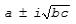

Intel® oneAPI Math Kernel Library Developer Reference - Fortran
Computes the eigenvalues and Schur factorization of a general matrix, orders the factorization and computes reciprocal condition numbers.
call sgeesx(jobvs, sort, select, sense, n, a, lda, sdim, wr, wi, vs, ldvs, rconde, rcondv, work, lwork, iwork, liwork, bwork, info)
call dgeesx(jobvs, sort, select, sense, n, a, lda, sdim, wr, wi, vs, ldvs, rconde, rcondv, work, lwork, iwork, liwork, bwork, info)
call cgeesx(jobvs, sort, select, sense, n, a, lda, sdim, w, vs, ldvs, rconde, rcondv, work, lwork, rwork, bwork, info)
call zgeesx(jobvs, sort, select, sense, n, a, lda, sdim, w, vs, ldvs, rconde, rcondv, work, lwork, rwork, bwork, info)
call geesx(a, wr, wi [,vs] [,select] [,sdim] [,rconde] [,rcondev] [,info])
call geesx(a, w [,vs] [,select] [,sdim] [,rconde] [,rcondev] [,info])
The routine computes for an n-by-n real/complex nonsymmetric matrix A, the eigenvalues, the real-Schur/Schur form T, and, optionally, the matrix of Schur vectors Z. This gives the Schur factorization A = Z*T*ZH.
Optionally, it also orders the eigenvalues on the diagonal of the real-Schur/Schur form so that selected eigenvalues are at the top left; computes a reciprocal condition number for the average of the selected eigenvalues (rconde); and computes a reciprocal condition number for the right invariant subspace corresponding to the selected eigenvalues (rcondv). The leading columns of Z form an orthonormal basis for this invariant subspace.
For further explanation of the reciprocal condition numbers rconde and rcondv, see [LUG], Section 4.10 (where these quantities are called s and sep respectively).
A real matrix is in real-Schur form if it is upper quasi-triangular with 1-by-1 and 2-by-2 blocks. 2-by-2 blocks will be standardized in the form
where b*c < 0. The eigenvalues of such a block are 
A complex matrix is in Schur form if it is upper triangular.
CHARACTER*1. Must be 'N' or 'V'.
If jobvs = 'N', then Schur vectors are not computed.
If jobvs = 'V', then Schur vectors are computed.
CHARACTER*1. Must be 'N' or 'S'. Specifies whether or not to order the eigenvalues on the diagonal of the Schur form.
If sort = 'N', then eigenvalues are not ordered.
If sort = 'S', eigenvalues are ordered (see select).
LOGICAL FUNCTION of two REAL arguments for real flavors.
LOGICAL FUNCTION of one COMPLEX argument for complex flavors.
select must be declared EXTERNAL in the calling subroutine.
If sort = 'S', select is used to select eigenvalues to sort to the top left of the Schur form.
If sort = 'N', select is not referenced.
For real flavors:
An eigenvalue wr(j)+sqrt(-1)*wi(j) is selected if select(wr(j), wi(j)) is true; that is, if either one of a complex conjugate pair of eigenvalues is selected, then both complex eigenvalues are selected.
For complex flavors:
An eigenvalue w(j) is selected if select(w(j)) is true.
Note that a selected complex eigenvalue may no longer satisfy select(wr(j), wi(j))= .TRUE. after ordering, since ordering may change the value of complex eigenvalues (especially if the eigenvalue is ill-conditioned); in this case info may be set to n+2 (see info below).
CHARACTER*1. Must be 'N', 'E', 'V', or 'B'. Determines which reciprocal condition number are computed.
If sense = 'N', none are computed;
If sense = 'E', computed for average of selected eigenvalues only;
If sense = 'V', computed for selected right invariant subspace only;
If sense = 'B', computed for both.
If sense is 'E', 'V', or 'B', then sort must equal 'S'.
INTEGER. The order of the matrix A (n≥ 0).
REAL for sgeesx
DOUBLE PRECISION for dgeesx
COMPLEX for cgeesx
DOUBLE COMPLEX for zgeesx.
Arrays:
a(lda,*) is an array containing the n-by-n matrix A.
The second dimension of a must be at least max(1, n).
work is a workspace array, its dimension max(1, lwork).
INTEGER. The leading dimension of the array a. Must be at least max(1, n).
INTEGER. The leading dimension of the output array vs. Constraints:
ldvs≥ 1;
ldvs≥ max(1, n)if jobvs = 'V'.
INTEGER.
The dimension of the array work. Constraint:
lwork≥ max(1, 3n) for real flavors;
lwork≥ max(1, 2n) for complex flavors.
Also, if sense = 'E', 'V', or 'B', then
lwork≥n+2*sdim*(n-sdim) for real flavors;
lwork≥ 2*sdim*(n-sdim) for complex flavors;
where sdim is the number of selected eigenvalues computed by this routine.
Note that 2*sdim*(n-sdim) ≤n*n/2. Note also that an error is only returned if lwork<max(1, 2*n), but if sense = 'E', or 'V', or 'B' this may not be large enough.
For good performance, lwork must generally be larger.
If lwork = -1, then a workspace query is assumed; the routine only calculates upper bound on the optimal size of the array work, returns this value as the first entry of the work array, and no error message related to lwork is issued by xerbla.
INTEGER.
Workspace array, size (liwork). Used in real flavors only. Not referenced if sense = 'N' or 'E'.
INTEGER.
The dimension of the array iwork. Used in real flavors only.
Constraint:
liwork≥ 1;
if sense = 'V' or 'B', liwork≥sdim*(n-sdim).
REAL for cgeesx
DOUBLE PRECISION for zgeesx
Workspace array, size at least max(1, n). Used in complex flavors only.
LOGICAL. Workspace array, size at least max(1, n). Not referenced if sort = 'N'.
On exit, this array is overwritten by the real-Schur/Schur form T.
INTEGER.
If sort = 'N', sdim= 0.
If sort = 'S', sdim is equal to the number of eigenvalues (after sorting) for which select is true.
Note that for real flavors complex conjugate pairs for which select is true for either eigenvalue count as 2.
REAL for sgeesx
DOUBLE PRECISION for dgeesx
Arrays, size at least max (1, n) each. Contain the real and imaginary parts, respectively, of the computed eigenvalues, in the same order that they appear on the diagonal of the output real-Schur form T. Complex conjugate pairs of eigenvalues appear consecutively with the eigenvalue having positive imaginary part first.
COMPLEX for cgeesx
DOUBLE COMPLEX for zgeesx.
Array, size at least max(1, n). Contains the computed eigenvalues. The eigenvalues are stored in the same order as they appear on the diagonal of the output Schur form T.
REAL for sgeesx
DOUBLE PRECISION for dgeesx
COMPLEX for cgeesx
DOUBLE COMPLEX for zgeesx.
Array vs(ldvs,*); the second dimension of vs must be at least max(1, n).
If jobvs = 'V', vs contains the orthogonal/unitary matrix Z of Schur vectors.
If jobvs = 'N', vs is not referenced.
REAL for single precision flavors DOUBLE PRECISION for double precision flavors.
If sense = 'E' or 'B', rconde contains the reciprocal condition number for the average of the selected eigenvalues.
If sense = 'N' or 'V', rconde is not referenced.
If sense = 'V' or 'B', rcondv contains the reciprocal condition number for the selected right invariant subspace.
If sense = 'N' or 'E', rcondv is not referenced.
On exit, if info = 0, then work(1) returns the required minimal size of lwork.
INTEGER.
If info = 0, the execution is successful.
If info = -i, the ith parameter had an illegal value.
If info = i, and
i≤n:
the QR algorithm failed to compute all the eigenvalues; elements 1:ilo-1 and i+1:n of wr and wi (for real flavors) or w (for complex flavors) contain those eigenvalues which have converged; if jobvs = 'V', vs contains the transformation which reduces A to its partially converged Schur form;
i = n+1:
the eigenvalues could not be reordered because some eigenvalues were too close to separate (the problem is very ill-conditioned);
i = n+2:
after reordering, roundoff changed values of some complex eigenvalues so that leading eigenvalues in the Schur form no longer satisfy select = .TRUE.. This could also be caused by underflow due to scaling.
Routines in Fortran 95 interface have fewer arguments in the calling sequence than their FORTRAN 77 counterparts. For general conventions applied to skip redundant or restorable arguments, see LAPACK 95 Interface Conventions.
Specific details for the routine geesx interface are the following:
Holds the matrix A of size (n, n).
Holds the vector of length (n). Used in real flavors only.
Holds the vector of length (n). Used in real flavors only.
Holds the vector of length (n). Used in complex flavors only.
Holds the matrix VS of size (n, n).
Restored based on the presence of the argument vs as follows:
jobvs = 'V', if vs is present,
jobvs = 'N', if vs is omitted.
Restored based on the presence of the argument select as follows:
sort = 'S', if select is present,
sort = 'N', if select is omitted.
Restored based on the presence of arguments rconde and rcondv as follows:
sense = 'B', if both rconde and rcondv are present,
sense = 'E', if rconde is present and rcondv omitted,
sense = 'V', if rconde is omitted and rcondv present,
sense = 'N', if both rconde and rcondv are omitted.
If you are in doubt how much workspace to supply, use a generous value of lwork (or liwork) for the first run or set lwork = -1 (liwork = -1).
If you choose the first option and set any of admissible lwork (or liwork) sizes, which is no less than the minimal value described, the routine completes the task, though probably not so fast as with a recommended workspace, and provides the recommended workspace in the first element of the corresponding array (work, iwork) on exit. Use this value (work(1), iwork(1)) for subsequent runs.
If you set lwork = -1, the routine returns immediately and provides the recommended workspace in the first element of the corresponding array (work, iwork). This operation is called a workspace query.
Note that if you set lwork (liwork) to less than the minimal required value and not -1, the routine returns immediately with an error exit and does not provide any information on the recommended workspace.